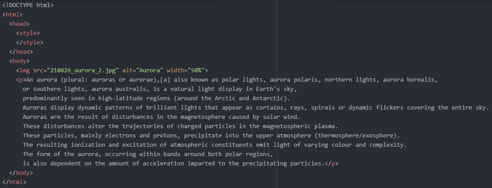
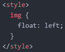
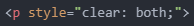

- 'float'에 대해 알아보기
'float'은 이미지를 삽화로 삽입할 때와 레이아웃을 잡을 때 사용하는 속성입니다.
하지만 레이아웃을 잡는 것은 'flex'를 이용하는 것이 좀 더 간편하기 때문에 'float'으로 레이아웃을 잡는 데 있어선 활용도가 점차 떨어지고 있는 추세입니다.
어쨌든 'float'에 대해 알아보겠습니다.
우선, 이미지를 삽화로 삽입해 보겠습니다.
다음과 같이 코드를 작성합니다.
그럼 아래와 같은 화면이 출력됩니다.
여기서 마치 삽화처럼 이미지와 텍스트를 자연스럽게 배치해 보려고 합니다.
이때 사용하는 것이 'float' 속성입니다.
다음과 같이 코드를 작성합니다.
'float: left;'를 선언하면 이미지를 좌측에, 텍스트를 우측에 정렬한다는 의미입니다.
그럼 당연히 'float: right;'를 선언하면 이미지를 우측에, 텍스트를 좌측에 정렬한다는 의미겠죠?
그리고 이미지와 텍스트가 너무 딱 붙어있는데, 이는 박스 모델을 이용하여 간격을 조정해 주면 됩니다.
여기서 텍스트를 더 길게 늘려보겠습니다.
보다시피 두 번째 문단이 시작하는 위치가 좀 불편합니다.
이는 'float' 속성의 영향을 받고 있기 때문에 그렇습니다.
그래서 저는 두 번째 문단이 'float' 속성의 영향에서 벗어나도록 하려고 합니다.
이때는 해당 텍스트가 속한 태그에 다음과 같은 코드를 적용해 주면 됩니다.
저는 'in-line' 방식을 적용했지만, class나 id를 이용해도 무방합니다.
또한, 'clear: both;'에서 'both'말고도 'left'와 'right'를 속성값으로 지정해 줄 수도 있습니다.
이때, 이미지가 'float: left;' 상태면 'clear: left;'를, 'float: right'면 'clear: right;'를 선언해 줘야 효과가 적용됩니다.
만약 이미지가 'float: left;' 상태인데 'clear: right;'를 선언했다면 효과가 적용되지 않고 두 번째 문단은 그대로 float의 영향을 받게 됩니다.
그런데 위와 같이 'clear: both;'를 선언하면 'float: left;'든 'float: right;'든 상관없이 float의 영향에서 벗어날 수 있습니다.
그 결과는 아래와 같습니다.
박스 모델을 이용하여 조금 더 예쁘게 꾸며준 결과는 아래와 같습니다.
이렇게 'float' 속성을 이용하면 이미지를 삽화처럼 삽입할 수 있게 됩니다.
위에서 'float' 속성을 이용하면 레이아웃을 잡을 수 있다고 했습니다.
그런데, 'flex'를 이용하면 더 쉽게 레이아웃을 만들 수 있다고 했습니다.
따라서 'float' 속성으로 레이아웃을 잡는 방법에 대한 설명은 따로 하지 않고 아래 영상으로 대체하겠습니다.
그럼 'float'에 대한 설명은 여기서 마치겠습니다.
내일도 화이팅!